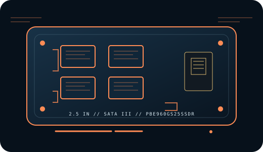

[ INDIVIDUAL COMPONENT // CONSUMER SATA SSD ]
Patriot Burst Elite 960 GB
Capacity-specific record for manufacturer part number PBE960GS25SSDR. Specifications are restricted to cited manufacturer information; series-wide or typical figures are identified as such rather than treated as guarantees for every device or revision.

IDENTIFICATION: Match the full model/SKU PBE960GS25SSDR, capacity, label, and firmware before servicing or replacing a drive. This is a consumer 2.5-inch SATA SSD, not an M.2 or NVMe device.
Specifications & compatibility
| Manufacturer / model / SKU | Patriot Burst Elite 960 GB // PBE960GS25SSDR |
|---|---|
| Capacity | 960 GB nominal capacity. |
| Form factor / interface | 2.5-inch, 7 mm; SATA III 6 Gb/s. |
| NAND | The available manufacturer SKU sheet does not guarantee NAND cell type or supplier; retain exact part/firmware identification. |
| Rated sequential performance | Patriot publishes up to 450 MB/s read and 320 MB/s write for this capacity in the exact-SKU sheet; workload results vary by host. |
| Endurance | Patriot warranty is constrained by total bytes written, but the cited exact-SKU manufacturer sheet does not state a numeric TBW value. |
| Warranty | 3-year limited warranty or TBW limit, whichever comes first, subject to Patriot terms. |
| Revision / identification | The cited manufacturer sources do not specify a fixed, field-interchangeable internal hardware revision for this consumer SKU. Preserve the full label, serial, firmware, and purchase region; confirm any service/firmware procedure with the manufacturer for the exact unit. |
| Host compatibility | Requires a compatible 2.5-inch SATA data and power connection; this SATA III drive can negotiate with older SATA hosts at their supported link speed. Verify bay height/adapter, connector, BIOS storage mode, operating-system driver, boot support, and TRIM/SMART pass-through through any enclosure or controller. |
Preservation & maintenance
- Record the drive label, full part number, serial, firmware, host/controller, and a read-only SMART snapshot before migration or configuration changes.
- Keep independent, verified backups; endurance, warranty, and SMART indicators do not guarantee remaining life or data retention.
- Do not assume NAND/controller interchangeability across production lots. Use only manufacturer instructions for firmware updates, secure erase, diagnostics, and warranty claims.
Manufacturer sources
- Patriot — Burst Elite SATA SSD product pageManufacturer product overview and TBW/warranty limitation.
- Patriot — PBE960GS25SSDR SKU sheetManufacturer exact-capacity SKU sheet.
Both references above are HTTPS manufacturer sources. Where a value is not fixed or published for this exact SKU, it is identified as unspecified instead of inferred from a reseller or a different family capacity.